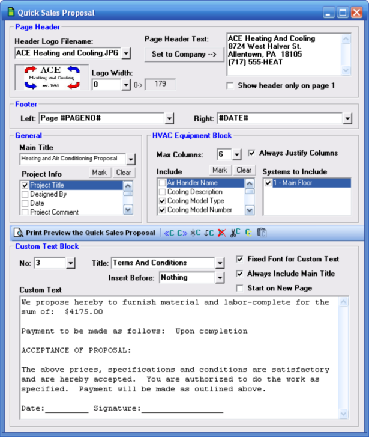
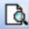
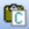

Quick Sales Proposal (Project Menu) |
  
|
Quick Sales Proposal (Project Menu) |
|
Icon:  . Keyboard Shortcut: ALT, P, Q
. Keyboard Shortcut: ALT, P, Q
Opens the Quick Sales Proposal window, where you can create a simple sales proposal to be included along with the rest of the program's reports. For a more advanced sales proposal use the separately licensed Proposal Maker window.

Page Header
Logo Filename: Specifies the name of a logo picture file to be added to the upper left corner of one or more pages.
Logo Width: If you would like to set the picture width to a certain number of pixels, enter the amount here. Otherwise you may leave this input at zero and the picture's original width will be used.
The largest width allowed will be half the usable page width, regardless of what you enter here.
The width of the current logo picture is shown in the gray box to the right of this input.
Page Header Text: Specifies text to be inserted in the upper right corner of one or more pages of the proposal. Press Ctrl+Enter to enter a new line of text.
Set to Company: Inserts the company name, address, city, state, ZIP code, and phone number entered on the Company tab of the General Project Data window into the Page Header Text input.
Show header only on page 1: When checked, prints the logo and page header text only on the first page of the quick sales proposal. When unchecked they appear at the top of each page.
Footer
Left, Right: Enter the text you want for the left and right footers, or leave blank to not have a footer. The footer text you specify will be shown on each page of the quick sales proposal.
If you would like to include things such as the current date or the page number, then select the appropriate item from the list below, such as "#PAGENO#" for the page number. You can include other text along with the special string, such as "Page #PAGENO#" to show the word "Page" followed by the page number.
Special Text |
Description |
Page #PAGENO# |
The word "Page" followed by the page number |
#DATE# |
The current date (when you print the proposal) |
#DATETIME# |
The current date and time (when you print the proposal) |
General
Main Title: Specifies the text you want to use for the title bar of the report. This text will appear in the colored block called the "Main Header" at the top of the first page.
Project Information: Includes a line in the report for each item you check.
HVAC Equipment Block
Max Columns: Determines the maximum number of columns that will be printed to accommodate the list of HVAC equipment.
Always justify columns: Makes it so the columns are spread out wide enough to fill the width of the report page.
Items to include: Determines which inputs about the equipment will be included in the report.
Systems to include: Determines which systems will be included in the report. By default, only the systems with zones in them are checked when this window is first opened.
Custom Text Block

Preview Custom Report: Opens the Print Preview window with the Custom Report as the only report.Go To Previous Custom Text Block: Goes to the previous custom text block in the list.
Go to Next Custom Text Block: Goes to the next custom text block in the list
Create New Custom Text Block: Adds another custom text block to the end of the list.
Insert New Custom Text Block: Creates a new custom text block in sequence before the current one.
Delete Custom Text Block: Removes the current custom text block from the list.
Cut Custom Text Block: Deletes the current custom text block from the list and puts it in the clipboard.
Copy Custom Text Block: Copies the current custom text block to the clipboard.

Paste Custom Text Block: Pastes the custom text block that is in the clipboard into the current one. This button is only available after you have copied a custom text block since opening Rhvac.No: Displays the number of the text block currently being edited. Text blocks are printed in sequential order.
Title: Specifies the title of the custom text block, which will appear as a Secondary Header, as seen on the Miscellaneous tab of the Properties of Print Preview window.
Insert Before: If you want this text block to appear before the Project Information section or the HVAC Systems selection select the appropriate option from the list in the dropdown help window for this input.
Option |
Where Text Will Appear |
Nothing |
At end of document |
Project |
Before the Project Information section |
System |
Before the HVAC Systems section |
Start on new page: Makes it so a new page is started for this custom text block.
Always include main title: Makes it so the Main Title entered on this window will be printed at the top of the page as a Main Header whenever a new page is required.
Fixed font: Changes the font to Courier New, which is a monospace font. When unchecked, the font is set to the Body font specified on the Properties of Print Preview window.
Custom Text: Displays the text to be printed for this custom text block.